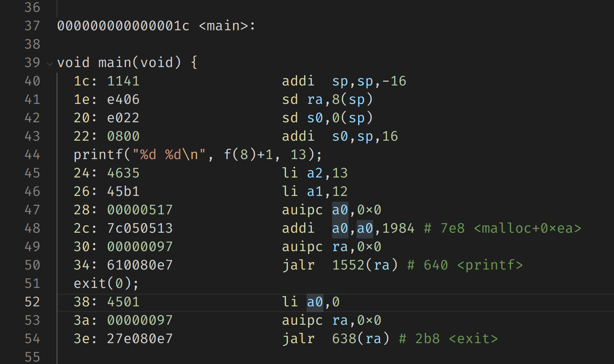

Lab4考察的主要内容是陷阱有关的内容，前置知识是xv6book的第四章和kernel/trap.c，kernel/trampoline.S两个源码文件，顺便还需要复习一下Lab2的一些知识。
RISC-V assembly
这个任务是让你简单了解一下RISC-V的汇编指令，然后回答几个问题。
首先make fs.img进行编译，查看得到的user/call.asm文件。
其中main函数部分如下：

问题如下：
问题一：哪些寄存器存储了函数调用的参数？举个例子，main 调用 printf 的时候，13 被存在了哪个寄存器中？
问题二：main 中调用函数 f 对应的汇编代码在哪？对 g 的调用呢？ (提示：编译器有可能会内联(inline)一些函数)
问题三：printf 函数所在的地址是？
问题四：在 main 中 jalr 跳转到 printf 之后，ra 的值是什么？
问题五：运行下面的代码
unsigned int i = 0x00646c72; printf("H%x Wo%s", 57616, &i);输出是什么？ 如果 RISC-V 是大端序的，要实现同样的效果，需要将 i 设置为什么？需要将 57616 修改为别的值吗？
问题六：在下面的代码中，’y=’ 之后会打印什么？ (note: 答案不是一个具体的值) 为什么?
printf("x=%d y=%d", 3);
回答如下：
- 回答一：根据第45行代码，我们可以直到printf所调用的两个参数12(其实就是f(8)+1)和13分别被存放到了寄存器a1和a2中，又由之前的知识可以知道xv6中是用a0
a7存放函数的参数的，所以答案是 a0a7，a2。 - 回答二：其实根据42行直接把12存放到了a1中，去看f和g的代码，就可以知道是编译器自动把g内联到了f中，f又自动内联到了main中，自然就没有调用对应的汇编代码。
- 回答三：两种方法可以得到，一种是直接在整个asm文件中搜索printf，可以找到其地址是0x0000000000000630。或者通过计算得到：首先将当前程序计数器的值赋给 ra 寄存器。
auipc ra, 0x0，是指将当前立即数向右移动12位，然后加上 pc 寄存器的值，赋给 ra 寄存器，由于立即数为 0，因此 ra 的值即为 pc 的值。当前指令在0x30处，因此 pc = 0x30。1536(ra) 是指 1536 加上 ra 寄存器的值，1536 转为16进制再加上0x30 即为 0x0000000000000630。刚好是 printf 的地址。 - 回答四：jalr 指令会将 pc + 4 赋给当前寄存器，刚好是其下一条指令的地址。
- 回答五：%x是用十六进制输出，所以前一段输出会是He110，而%s是输出字符串，因为RISC-V是小端序，所以内存中存放的是72 6c 64 00，是ascii码，所以输出是World，采用大端序的话改成0x726c6400就好了。所以答案是He110 World。
- 回答六：printf 接收到了两个参数，但实际需要三个参数，最后一个参数是放在 a2 寄存器中，由于没有输入第三个参数，所以会输出a2当前的值，所以不固定。
Backtrace
本任务要求实现一个backtrace函数，对调用的函数栈进行回溯。
在操作系统(Xv6)中，内核为每个进程都分配了一段栈帧内存页，用于存放栈，函数调用就是在该处进行的，其中fp为当前函数的栈顶指针，fp-8存放的是返回地址，fp-16存放原栈帧，也就是调用函数的fp，因此我们可以从当前函数的fp出发，每次向fp-16回溯直到当前页的开始地址就可以找到调用链。
根据实验提示，我们首先将backtrace()的声明添加到kernel/defs.h：void backtrace(void);
然后使用提示给出的读取fp的函数，其实就是获取s0的值，将这个函数添加到kernel\riscv.h中。
static inline uint64
r_fp()
{
uint64 x;
asm volatile("mv %0, s0" : "=r"(x));
return x;
}接着就可以实现backtrace了，根据提示和上面提到的方法，并不困难。
void backtrace()
{
uint64 fp = r_fp(), top = PGROUNDUP(fp);
printf("backtrace:\n");
for(; fp < top; fp = *((uint64*)(fp-16))) {
printf("%p\n", *((uint64*)(fp-8)));
}
}最后根据任务要求，在 kernel/printf.c 文件中的 panic 函数里添加 backtrace 的函数调用；在 sys_sleep 代码中也添加同样的函数调用。
panic
printf("\n");
backtrace();
panicked = 1; // freeze uart output from other CPUssys_sleep
release(&tickslock);
backtrace();
return 0;这样这个任务就完成了，可以用bttest命令来检查。
Alarm
这个任务是让添加一个新的系统调用sigalarm，如果应用程序调用sigalarm(n, fn) ，那么在程序消耗的 每 n 个CPU 时间“tick”之后，内核应该调用函数fn。当fn返回时，应用程序应该从中断的地方继续。这个任务有三个test，其中test0只需要进入内核并且至少执行一次就可以了，不需要正确返回
首先根据lab2的流程和任务提示添加系统调用
// user/user.h
int sigalarm(int ticks, void (*handler)());
int sigreturn(void);
// user/usys.pl
entry("sigalarm");
entry("sigreturn");
// kernel/syscall.h
#define SYS_sigalarm 22
#define SYS_sigreturn 23
// kernel/syscall.c
extern uint64 sys_sigalarm(void);
extern uint64 sys_sigreturn(void);
[SYS_sigalarm] sys_sigalarm,
[SYS_sigreturn] sys_sigreturn,然后实现test0，先写一个sys_sigreturn，暂时只用返回0，后面test1/2再补充。
// kernel/sysproc.c
uint64 sys_sigreturn(void)
{
return 0;
}然后是sys_sigalarm, 作用是给proc结构体进行赋值，为了记录时间间隔，经过的时钟数和调用的函数信息，我们还需要在proc结构体中添加一些成员
// kernel/proc.h
// in struct proc
int interval;
uint64 handler;
int ticks;
// kernel/sysproc.c
uint64 sys_sigalarm(void)
{
int interval;
uint64 handler;
struct proc * p;
if(argint(0, &interval) < 0 || argaddr(1, &handler) < 0 || interval < 0) {
return -1;
}
p = myproc();
p->interval = interval;
p->handler = handler;
p->ticks = 0;
return 0;
}因为proc中添加了新成员，所以在进程初始化的时候也要赋初值，进程结束的时候释放。
// kernel/proc.c
// in allocproc()
p->interval = 0;
p->handler = 0;
p->ticks = 0;
// in freeproc()
p->interval = 0;
p->handler = 0;
p->ticks = 0;最后，在时钟中断的时候进行处理，根据实验提示可以直到时钟中断部分是if(which_dev == 2) ：
// kernel/trap.c
// in usertrap()
if(which_dev == 2) {
if(p->interval) {
if(p->ticks == p->interval) {
p->ticks = 0; // will be removed
p->trapframe->epc = p->handler;
}
p->ticks++;
}
yield();
}到这里，test0 就可以顺利通过了。值得注意的是，现在还不能正确返回到调用前的状态，因此test1 和 test2 还不能正常通过。
这里为啥把要调用的函数直接赋给 epc 呢，原因是函数在返回时，调用 ret 指令，使用 trapframe 内事先保存的寄存器的值进行恢复。这里我们更改 epc 寄存器的值，在返回后，就直接调用的是 handler 处的指令，即执行 handler 函数。
handler 函数是用户态的代码，使用的是用户页表的虚拟地址，因此只是在内核态进行赋值，在返回到用户态后才进行执行，并没有在内核态执行handler代码。
最后来看test1/2，不能正常通过的原因是在执行好 handler 后，我们希望的是回到用户调用 handler 前的状态。但那时的状态已经被用来调用 handler 函数了，现在的 trapframe 中存放的是执行 sys_sigreturn 前的 trapframe，如果直接返回到用户态，就会找不到之前的状态。
一个比较简单的解决办法是再添加一个trapframe成员记录保存调用 handler 之前的 trapframe，这样只要执行了handler，我们就保存执行前的trapframe，然后在sys_sigreturn()的时候恢复回来。
// kernel/proc.h
// in struct proc
struct trapframe *pretrapframe;然后同样在初始化和结束的时候赋初值和释放：
// kernel/proc.c
// in allocproc()
p->interval = 0;
p->handler = 0;
p->ticks = 0;
if((p->pretrapframe = (struct trapframe *)kalloc()) == 0){
release(&p->lock);
return 0;
}
// in freeproc()
p->interval = 0;
p->handler = 0;
p->ticks = 0;
if(p->pretrapframe)
kfree((void*)p->pretrapframe);调用handler时保存trapframe：
// kernel/trap.c
// in usertrap()
if(which_dev == 2) {
if(p->interval) {
if(p->ticks == p->interval) {
//p->ticks = 0;
*p->pretrapframe = *p->trapframe;
p->trapframe->epc = p->handler;
}
p->ticks++;
}
yield();
}最后，实现 sys_sigreturn 恢复执行 handler 之前的状态：
uint64 sys_sigreturn(void)
{
struct proc *p = myproc();
*p->trapframe = *p->pretrapframe;
p->ticks = 0;
return 0;
}为什么要把ticks置0从usertrap中挪到sys_sigreturn中呢，因为我们要保证如果有一个handler函数正在执行，就不能让第二个handler函数继续执行。为此，可以再添加一个成员，用于标记是否有 handler 在执行。如果选择不添加新成员，那么就可以采用这种方法，因为第一个 handler 还没执行完时， ticks会 一直递增，因为ticks不是0，所以第二个 handler 始终无法执行。只有当 sigreturn 执行完成后，ticks 才置为 0，这样就可以等待下一个 handler 执行了。
总结
这个实验虽然写的代码没有上一个实验多，但想要完全理解trap的机制还是有一定难度的，做完这个实验确实收获许多。